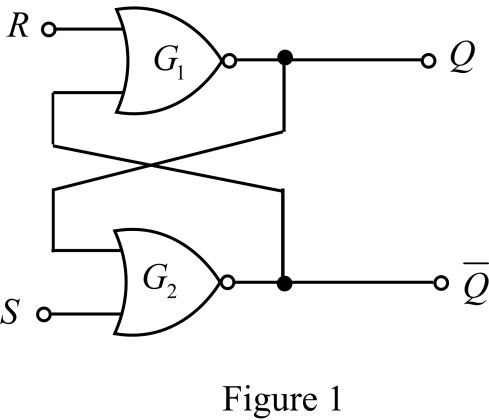
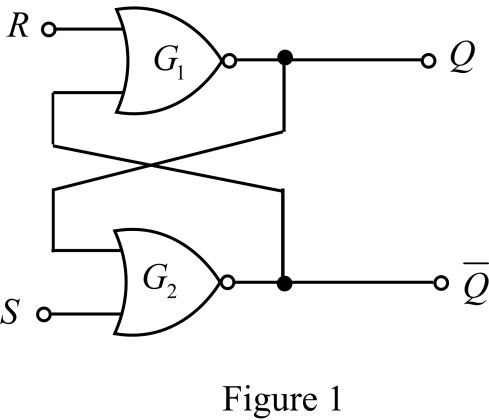
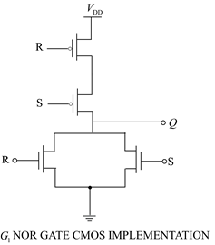
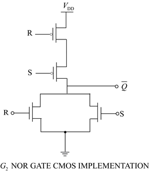
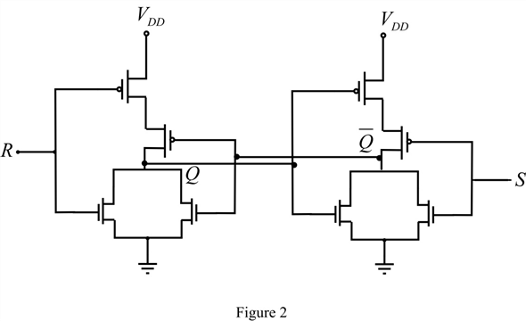

Draw the set/Reset flip flop as shown in Figure 1.


Draw the set/Reset flip flop as shown in Figure 1.

Form the truth table for flip-flop.
Implement the NOR gate using CMOS transistors.

Implement the NOR gate using CMOS transistors.

Sketch the standard CMOS circuit implementation of the SR flip flop as shown in Figure 2.
